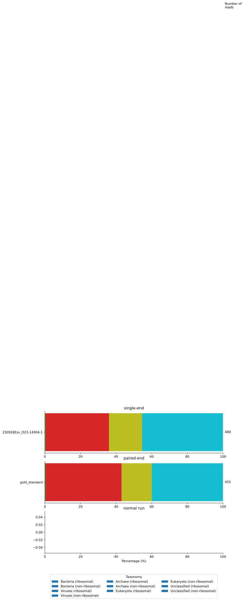
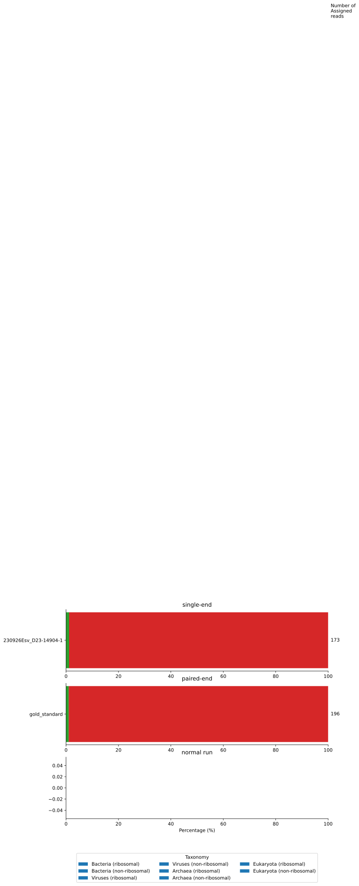

I’m adapting mgs-workflow to take in single-read sequencing data. Here I’m checking if: i) the output of the single-read PROFILE workflow looks as expected, and ii) if the output of the paired-end version is the same as the output of the test run on dev.
As in my previous post, the dataset the workflows are run on is based on Project Runway samples, with library prep performed at the BMC followed by Element AVITI sequencing. Will previously analyzed this test dataset here, using an early version of mgs-workflow.
Looking at Kingdom-level composition in both Kraken and Bracken results, the single-read output looks as expected, i.e., similar to the paired-end output. The paired-end run looks the same as when using the original run workflow, so addition of single-read functionality doesn’t impede mgs-workflow runs on paired-end data.
I will amend the HV subworkflow of mgs-workflow next.
Introduction
The single-end dataset simply consists of the forward reads of our usual test dataset. Additionally, I work with the paired-end test dataset. Both of these are run through run_dev_se.nf, a shorter version of run.nf that only includes RAW, CLEAN, and PROFILE. run_dev_se.nf contains a read_type parameter, which is set to single_end for the single-end run, and paired_end for the paired-end run. Finally, the paired-end run is compared to the output of a normal test run using run.nf.
First off, we can check if the high-level taxonomy statistics are the same between the single-read, paired-end, and default test runs. For this we use the kraken_reports_merged.tsv.gz files, which gives a detailed taxonomic breakdown.
Only looking at the kingdom-level, the single-read and paired-end read results look nearly identical, which is what we’d expect. As seen in the previous notebook, in the single-read run more total reads survive FASTP cleaning, leading to a higher number of reads that end up getting classified.
Code
import pandas as pdimport matplotlib.pyplot as pltimport numpy as np# Calculate percentagescols_to_normalize = ['Bacteria (Ribosomal)', 'Bacteria (Non-ribosomal)','Viruses (Ribosomal)', 'Viruses (Non-ribosomal)','Archaea (Ribosomal)', 'Archaea (Non-ribosomal)','Eukaryota (Ribosomal)', 'Eukaryota (Non-ribosomal)','Unclassified (Ribosomal)', 'Unclassified (Non-ribosomal)']# Create the horizontal stacked bar plotfig, (ax1, ax2, ax3) = plt.subplots(3, 1, figsize=(10, 8), dpi=300) ## Plot stacked bars horizontallyfor ax, df, title inzip([ax1, ax2, ax3], [se_kraken_plot_df, pe_kraken_plot_df, test_kraken_plot_df], ["single-end", "paired-end", "normal run"]): df_pct = df[cols_to_normalize].div(df[cols_to_normalize].sum(axis=1), axis=0) *100 left = np.zeros(len(df)) colors = plt.rcParams['axes.prop_cycle'].by_key()['color']for i, column inenumerate(cols_to_normalize): ax.barh(df['sample'], df_pct[column], left=left, label=column.capitalize(), color=colors[i]) left += df_pct[column]for i, row in df.iterrows(): ax.text(101, i, f'{int(row["Total Reads"]):,}', va='center', ha='left')# Customize the plot# ax.set_yticks(rotation=0) # No rotation needed for horizontal bars ax.set_title(title) ax.set_xlim(0, 100) ax.spines['top'].set_visible(False) ax.spines['right'].set_visible(False)# Add some padding to the right for the legendax3.set_xlabel('Percentage (%)')ax1.text(101, 9, 'Number of\nreads', va='center', ha='left')ax3.legend(title='Taxonomy', bbox_to_anchor=(0.5, -0.8), loc='center', ncol=3)plt.tight_layout()
/var/folders/gm/txqg8t5d57z34sqfjcvpcjj00000gn/T/ipykernel_5241/946545511.py:41: UserWarning:
Tight layout not applied. The bottom and top margins cannot be made large enough to accommodate all axes decorations.

Figure 2.1: Kingdom-level read distribution (Kraken)
Assessing Bracken output files
The other output of the PROFILE subworkflow is the bracken_reports_merged.tsv.gz file, which gives Bracken-summarized and corrected kingdom-level counts, based on the Kraken output. Again, single-read results look very similar to paired-end results. The only difference is a slightly higher share of non-ribosomal bacterial reads in the single-read run. I am uncertain to why that is, maybe the reads that FASTP removed in the paired-end run were enriched for non-ribosomal bacterial reads?
Code
import pandas as pdimport matplotlib.pyplot as pltimport numpy as np# Calculate percentagescols_to_normalize = ['Bacteria (Ribosomal)', 'Bacteria (Non-ribosomal)','Viruses (Ribosomal)', 'Viruses (Non-ribosomal)','Archaea (Ribosomal)', 'Archaea (Non-ribosomal)','Eukaryota (Ribosomal)', 'Eukaryota (Non-ribosomal)']# Create the horizontal stacked bar plotfig, (ax1, ax2, ax3) = plt.subplots(3, 1, figsize=(10, 8), dpi=300) ## Plot stacked bars horizontallyfor ax, df, title inzip([ax1, ax2, ax3], [se_bracken_plot_df, pe_bracken_plot_df, test_bracken_plot_df], ["single-end", "paired-end", "normal run"]): df_pct = df[cols_to_normalize].div(df[cols_to_normalize].sum(axis=1), axis=0) *100 left = np.zeros(len(df)) colors = plt.rcParams['axes.prop_cycle'].by_key()['color']for i, column inenumerate(cols_to_normalize): ax.barh(df['sample'], df_pct[column], left=left, label=column.capitalize(), color=colors[i]) left += df_pct[column]for i, row in df.iterrows(): ax.text(101, i, f'{int(row["Total Assigned Reads"]):,}', va='center', ha='left')# Customize the plot# ax.set_yticks(rotation=0) # No rotation needed for horizontal bars ax.set_title(title) ax.set_xlim(0, 100) ax.spines['top'].set_visible(False) ax.spines['right'].set_visible(False)# Add some padding to the right for the legendax3.set_xlabel('Percentage (%)')ax1.text(101, 9, 'Number of\nAssigned\nreads', va='center', ha='left')ax3.legend(title='Taxonomy', bbox_to_anchor=(0.5, -0.8), loc='center', ncol=3)plt.tight_layout()
/var/folders/gm/txqg8t5d57z34sqfjcvpcjj00000gn/T/ipykernel_5241/943950913.py:40: UserWarning:
Tight layout not applied. The bottom and top margins cannot be made large enough to accommodate all axes decorations.

Figure 3.1: Kingdom-level read distribution (Bracken)
Next steps
Overall, the single-read version of the PROFILE workflow seems to work as expected. The next step is to adapt the HV subworkflow.
Source Code
---title: "Testing the single-read version of mgs-workflow's PROFILE subworkflow"author: "Simon Grimm"date: 2024-11-07format: html: code-fold: true code-tools: true code-link: true df-print: paged toc: true toc-depth: 2 cap-location: bottom fig-format: svg crossref: fig-title: Figure fig-prefix: Figure chapters: truejupyter: venvtitle-block-banner: "#5cb2a0"---I'm adapting mgs-workflow to take in single-read sequencing data. Here I'm checking if: i) the output of the single-read PROFILE workflow looks as expected, and ii) if the output of the paired-end version is the same as the output of the test run on `dev`.As in my [previous post](https://data.securebio.org/simons-notebook/posts/2024-10-24-mgs-single-read-eval/), the dataset the workflows are run on is based on Project Runway samples, with library prep performed at the BMC followed by Element AVITI sequencing. Will previously analyzed this test dataset [here](https://data.securebio.org/wills-public-notebook/notebooks/2023-12-19_project-runway-bmc-rna.html), using an early version of mgs-workflow.Looking at Kingdom-level composition in both Kraken and Bracken results, the single-read output looks as expected, i.e., similar to the paired-end output. The paired-end run looks the same as when using the original run workflow, so addition of single-read functionality doesn't impede mgs-workflow runs on paired-end data.I will amend the HV subworkflow of mgs-workflow next.# IntroductionThe single-end dataset simply consists of the forward reads of our usual test dataset. Additionally, I work with the paired-end test dataset. Both of these are run through `run_dev_se.nf`, a shorter version of `run.nf` that only includes RAW, CLEAN, and PROFILE. `run_dev_se.nf` contains a `read_type` parameter, which is set to `single_end` for the single-end run, and `paired_end` for the paired-end run. Finally, the paired-end run is compared to the output of a normal test run using `run.nf`.```{python}#| label: load-packages#| include: falseimport osimport pandas as pdimport matplotlib.pyplot as pltimport seaborn as sns``````{python}#| label: data-pathssingle_read_dir ="~/code/simons-notebook/posts/2024-10-28-mgs-taxonomy-eval/mgs-results/test_single_read"paired_read_dir ="~/code/simons-notebook/posts/2024-10-28-mgs-taxonomy-eval/mgs-results/test_paired_end"test_dir ="~/code/simons-notebook/posts/2024-10-28-mgs-taxonomy-eval/mgs-results/test"se_output_dir = os.path.join(single_read_dir, "output")pe_output_dir = os.path.join(paired_read_dir, "output")test_output_dir = os.path.join(test_dir, "output")se_results_dir = os.path.join(se_output_dir, "results")pe_results_dir = os.path.join(pe_output_dir, "results")test_results_dir = os.path.join(test_output_dir, "results")se_bracken_path = os.path.join(se_results_dir, "bracken_reports_merged.tsv.gz")pe_bracken_path = os.path.join(pe_results_dir, "bracken_reports_merged.tsv.gz")test_bracken_path = os.path.join(test_results_dir, "bracken_reports_merged.tsv.gz")se_kraken_path = os.path.join(se_results_dir, "kraken_reports_merged.tsv.gz")pe_kraken_path = os.path.join(pe_results_dir, "kraken_reports_merged.tsv.gz")test_kraken_path = os.path.join(test_results_dir, "kraken_reports_merged.tsv.gz")```# Assessing Kraken output filesFirst off, we can check if the high-level taxonomy statistics are the same between the single-read, paired-end, and default test runs. For this we use the `kraken_reports_merged.tsv.gz` files, which gives a detailed taxonomic breakdown.Only looking at the kingdom-level, the single-read and paired-end read results look nearly identical, which is what we'd expect. As seen in the previous notebook, in the single-read run more total reads survive FASTP cleaning, leading to a higher number of reads that end up getting classified.```{python}#| label: load-kraken-output#| include: false#| echo: falsese_kraken = pd.read_csv(se_kraken_path, sep='\t')pe_kraken = pd.read_csv(pe_kraken_path, sep='\t')test_kraken = pd.read_csv(test_kraken_path, sep='\t')# print(se_kraken.head())# print(pe_kraken.head())print(test_kraken.head())``````{python}#| label: generate-table#| include: falsedata = []tax_ids = {"Bacteria": 2,"Viruses": 10239,"Archaea": 2157,"Eukaryota": 2759,"Unclassified": 0,}se_kraken_df = pd.read_csv(se_kraken_path, sep='\t')pe_kraken_df = pd.read_csv(pe_kraken_path, sep='\t')test_kraken_df = pd.read_csv(test_kraken_path, sep='\t')def process_df(df): data = []for sample, sample_data in df.groupby("sample"):# Process ribosomal reads ribo_df = sample_data[sample_data["ribosomal"] ==True] n_reads_bacteria_ribo = ribo_df[ribo_df["taxid"] == tax_ids["Bacteria"]]["n_reads_clade"].sum() n_reads_virus_ribo = ribo_df[ribo_df["taxid"] == tax_ids["Viruses"]]["n_reads_clade"].sum() n_reads_archea_ribo = ribo_df[ribo_df["taxid"] == tax_ids["Archaea"]]["n_reads_clade"].sum() n_reads_eukaryota_ribo = ribo_df[ribo_df["taxid"] == tax_ids["Eukaryota"]]["n_reads_clade"].sum() n_reads_unclassified_ribo = ribo_df[ribo_df["taxid"] == tax_ids["Unclassified"]]["n_reads_clade"].sum()# Process non-ribosomal reads nonribo_df = sample_data[sample_data["ribosomal"] ==False] n_reads_bacteria_nonribo = nonribo_df[nonribo_df["taxid"] == tax_ids["Bacteria"]]["n_reads_clade"].sum() n_reads_virus_nonribo = nonribo_df[nonribo_df["taxid"] == tax_ids["Viruses"]]["n_reads_clade"].sum() n_reads_archea_nonribo = nonribo_df[nonribo_df["taxid"] == tax_ids["Archaea"]]["n_reads_clade"].sum() n_reads_eukaryota_nonribo = nonribo_df[nonribo_df["taxid"] == tax_ids["Eukaryota"]]["n_reads_clade"].sum() n_reads_unclassified_nonribo = nonribo_df[nonribo_df["taxid"] == tax_ids["Unclassified"]]["n_reads_clade"].sum() total_reads = ( n_reads_bacteria_ribo + n_reads_bacteria_nonribo + n_reads_virus_ribo + n_reads_virus_nonribo + n_reads_archea_ribo + n_reads_archea_nonribo + n_reads_eukaryota_ribo + n_reads_eukaryota_nonribo + n_reads_unclassified_ribo + n_reads_unclassified_nonribo ) data.append([ sample, n_reads_bacteria_ribo, n_reads_bacteria_nonribo, n_reads_virus_ribo, n_reads_virus_nonribo, n_reads_archea_ribo, n_reads_archea_nonribo, n_reads_eukaryota_ribo, n_reads_eukaryota_nonribo, n_reads_unclassified_ribo, n_reads_unclassified_nonribo, total_reads ])return pd.DataFrame(data, columns=["sample","Bacteria (Ribosomal)", "Bacteria (Non-ribosomal)","Viruses (Ribosomal)", "Viruses (Non-ribosomal)","Archaea (Ribosomal)", "Archaea (Non-ribosomal)","Eukaryota (Ribosomal)", "Eukaryota (Non-ribosomal)","Unclassified (Ribosomal)", "Unclassified (Non-ribosomal)","Total Reads" ])se_kraken_plot_df = process_df(se_kraken_df)pe_kraken_plot_df = process_df(pe_kraken_df)test_kraken_plot_df = process_df(test_kraken_df)print(se_kraken_plot_df.head())print(pe_kraken_plot_df.head())print(test_kraken_plot_df.head())``````{python}#| label: fig-kraken-stats#| fig-cap: Kingdom-level read distribution (Kraken)import pandas as pdimport matplotlib.pyplot as pltimport numpy as np# Calculate percentagescols_to_normalize = ['Bacteria (Ribosomal)', 'Bacteria (Non-ribosomal)','Viruses (Ribosomal)', 'Viruses (Non-ribosomal)','Archaea (Ribosomal)', 'Archaea (Non-ribosomal)','Eukaryota (Ribosomal)', 'Eukaryota (Non-ribosomal)','Unclassified (Ribosomal)', 'Unclassified (Non-ribosomal)']# Create the horizontal stacked bar plotfig, (ax1, ax2, ax3) = plt.subplots(3, 1, figsize=(10, 8), dpi=300) ## Plot stacked bars horizontallyfor ax, df, title inzip([ax1, ax2, ax3], [se_kraken_plot_df, pe_kraken_plot_df, test_kraken_plot_df], ["single-end", "paired-end", "normal run"]): df_pct = df[cols_to_normalize].div(df[cols_to_normalize].sum(axis=1), axis=0) *100 left = np.zeros(len(df)) colors = plt.rcParams['axes.prop_cycle'].by_key()['color']for i, column inenumerate(cols_to_normalize): ax.barh(df['sample'], df_pct[column], left=left, label=column.capitalize(), color=colors[i]) left += df_pct[column]for i, row in df.iterrows(): ax.text(101, i, f'{int(row["Total Reads"]):,}', va='center', ha='left')# Customize the plot# ax.set_yticks(rotation=0) # No rotation needed for horizontal bars ax.set_title(title) ax.set_xlim(0, 100) ax.spines['top'].set_visible(False) ax.spines['right'].set_visible(False)# Add some padding to the right for the legendax3.set_xlabel('Percentage (%)')ax1.text(101, 9, 'Number of\nreads', va='center', ha='left')ax3.legend(title='Taxonomy', bbox_to_anchor=(0.5, -0.8), loc='center', ncol=3)plt.tight_layout()```# Assessing Bracken output filesThe other output of the PROFILE subworkflow is the `bracken_reports_merged.tsv.gz` file, which gives Bracken-summarized and corrected kingdom-level counts, based on the Kraken output. Again, single-read results look very similar to paired-end results. The only difference is a slightly higher share of non-ribosomal bacterial reads in the single-read run. I am uncertain to why that is, maybe the reads that FASTP removed in the paired-end run were enriched for non-ribosomal bacterial reads?```{python}#| label: load-bracken-output#| include: falsese_bracken = pd.read_csv(se_bracken_path, sep='\t')pe_bracken = pd.read_csv(pe_bracken_path, sep='\t')test_bracken = pd.read_csv(test_bracken_path, sep='\t')``````{python}#| label: generate-bracken-table#| include: falseprint(se_bracken.head())def process_df(df): data = []for sample, sample_data in df.groupby("sample"):# Process ribosomal reads ribo_df = sample_data[sample_data["ribosomal"] ==True] n_reads_bacteria_ribo = ribo_df[ribo_df["name"] =="Bacteria"]["kraken_assigned_reads"].sum() n_reads_virus_ribo = ribo_df[ribo_df["name"] =="Viruses"]["kraken_assigned_reads"].sum() n_reads_archea_ribo = ribo_df[ribo_df["name"] =="Archaea"]["kraken_assigned_reads"].sum() n_reads_eukaryota_ribo = ribo_df[ribo_df["name"] =="Eukaryota"]["kraken_assigned_reads"].sum()# Process non-ribosomal reads nonribo_df = sample_data[sample_data["ribosomal"] ==False] n_reads_bacteria_nonribo = nonribo_df[nonribo_df["name"] =="Bacteria"]["kraken_assigned_reads"].sum() n_reads_virus_nonribo = nonribo_df[nonribo_df["name"] =="Viruses"]["kraken_assigned_reads"].sum() n_reads_archea_nonribo = nonribo_df[nonribo_df["name"] =="Archaea"]["kraken_assigned_reads"].sum() n_reads_eukaryota_nonribo = nonribo_df[nonribo_df["name"] =="Eukaryota"]["kraken_assigned_reads"].sum() total_assigned_reads = ( n_reads_bacteria_ribo + n_reads_bacteria_nonribo + n_reads_virus_ribo + n_reads_virus_nonribo + n_reads_archea_ribo + n_reads_archea_nonribo + n_reads_eukaryota_ribo + n_reads_eukaryota_nonribo ) data.append([ sample, n_reads_bacteria_ribo, n_reads_bacteria_nonribo, n_reads_virus_ribo, n_reads_virus_nonribo, n_reads_archea_ribo, n_reads_archea_nonribo, n_reads_eukaryota_ribo, n_reads_eukaryota_nonribo, total_assigned_reads ])return pd.DataFrame(data, columns=["sample","Bacteria (Ribosomal)", "Bacteria (Non-ribosomal)","Viruses (Ribosomal)", "Viruses (Non-ribosomal)","Archaea (Ribosomal)", "Archaea (Non-ribosomal)","Eukaryota (Ribosomal)", "Eukaryota (Non-ribosomal)","Total Assigned Reads" ])se_bracken_plot_df = process_df(se_bracken)pe_bracken_plot_df = process_df(pe_bracken)test_bracken_plot_df = process_df(test_bracken)``````{python}#| label: fig-bracken-stats#| fig-cap: Kingdom-level read distribution (Bracken)import pandas as pdimport matplotlib.pyplot as pltimport numpy as np# Calculate percentagescols_to_normalize = ['Bacteria (Ribosomal)', 'Bacteria (Non-ribosomal)','Viruses (Ribosomal)', 'Viruses (Non-ribosomal)','Archaea (Ribosomal)', 'Archaea (Non-ribosomal)','Eukaryota (Ribosomal)', 'Eukaryota (Non-ribosomal)']# Create the horizontal stacked bar plotfig, (ax1, ax2, ax3) = plt.subplots(3, 1, figsize=(10, 8), dpi=300) ## Plot stacked bars horizontallyfor ax, df, title inzip([ax1, ax2, ax3], [se_bracken_plot_df, pe_bracken_plot_df, test_bracken_plot_df], ["single-end", "paired-end", "normal run"]): df_pct = df[cols_to_normalize].div(df[cols_to_normalize].sum(axis=1), axis=0) *100 left = np.zeros(len(df)) colors = plt.rcParams['axes.prop_cycle'].by_key()['color']for i, column inenumerate(cols_to_normalize): ax.barh(df['sample'], df_pct[column], left=left, label=column.capitalize(), color=colors[i]) left += df_pct[column]for i, row in df.iterrows(): ax.text(101, i, f'{int(row["Total Assigned Reads"]):,}', va='center', ha='left')# Customize the plot# ax.set_yticks(rotation=0) # No rotation needed for horizontal bars ax.set_title(title) ax.set_xlim(0, 100) ax.spines['top'].set_visible(False) ax.spines['right'].set_visible(False)# Add some padding to the right for the legendax3.set_xlabel('Percentage (%)')ax1.text(101, 9, 'Number of\nAssigned\nreads', va='center', ha='left')ax3.legend(title='Taxonomy', bbox_to_anchor=(0.5, -0.8), loc='center', ncol=3)plt.tight_layout()```# Next stepsOverall, the single-read version of the PROFILE workflow seems to work as expected. The next step is to adapt the HV subworkflow.